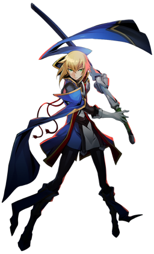

◈ NOL MAJOR · FROST BLADE
Jin
BlazBlue: Entropy Effect — Персонаж
80
Атака
60
Защита
75
Скорость
70
HP
★★★
Сложность
Ближний
Тип боя
Jin Kisaragi — майор NOL и обладатель Nox Nyctores Mucro Algesco: Yukianesa. Он контролирует лёд, замедляя и замораживая врагов, и использует уникальную механику Sheathing (вкладывания меча в ножны) для усиления атак. Jin считается одним из самых сложных персонажей для освоения, но его контроль темпа боя через Time Stasis и заморозку делает его невероятно сильным.
Time Stasis
Freeze/Slow
Sheathing

01
Досье персонажа
Имя
Jin Kisaragi
Титул
Frost Blade / NOL Major
Оружие
Mucro Algesco: Yukianesa (ледяной клинок)
Роль
Контроль / Комбо-специалист
Особенность
Time Stasis, заморозка, Sheathing
Боевые характеристики
ATK80
DEF60
SPD75
HP70
RANGE55
SKILL90
Талант (Talent)
Time Stasis
После успешного уклонения враги замедляются на 3.5 секунды. Уклонение — это использование Dash с правильным таймингом для избегания атаки. Во время Time Stasis враги и их снаряды двигаются медленно, а Jin остаётся на полной скорости и полностью неуязвим. Это позволяет наносить урон без риска.
После успешного уклонения враги замедляются на 3.5 секунды. Уклонение — это использование Dash с правильным таймингом для избегания атаки. Во время Time Stasis враги и их снаряды двигаются медленно, а Jin остаётся на полной скорости и полностью неуязвим. Это позволяет наносить урон без риска.
02
Навыки и приёмы
Reitou (Frost Bite)
Legacy Skill 1
Атака льдом, которая замораживает врагов на короткое время.
Урон и длительность заморозки растут с уровнем. Эффективно против боссов и групп врагов.
Hishousetsu (Pillar of Ice)
Legacy Skill 2
Jin создаёт ледяной столб, наносящий урон и замораживающий врагов в области.
Можно использовать в воздухе. Отличный инструмент для зонального контроля и прерывания атак.
Musou Senshouzan (Crystal Strike)
SP Skill
Мощная атака льдом с дополнительным ударом (нажмите C для продолжения).
Наносит высокий урон и замораживает врагов. Один из основных инструментов для burst-урона.
Sheathing
Уникальная механика
После каждой атаки Jin вкладывает меч в ножны. При появлении "вспышки" на рукояти
нужно вовремя нажать следующую атаку. Успешное выполнение увеличивает размер атаки
и наносит больше урона. Требует точного тайминга.
[Ground] Attack — 3-hit Combo
Базовая атака
Быстрая комбинация из 3 ударов мечом. После второго удара можно удерживать Attack
для немедленного начала зарядки Hyouten Danka (при наличии Universal Enhancement I).
[Airborne] Attack
Воздушная атака
Jin обнажает меч и выполняет удар вниз, затем горизонтальный разрез.
Можно комбинировать с Sheathing для усиления воздушных комбо.
Hyouten Danka
Заряженная атака
Заряжаемая атака льдом. При полной зарядке наносит огромный урон и замораживает врагов.
С Universal Enhancement I можно начать зарядку сразу после 2-го удара комбо.
Freezing / Slowing
Пассивная механика
Все атаки Jin могут замедлять и замораживать врагов. Замедление снижает скорость
передвижения и атаки, заморозка полностью останавливает врага.
С Universal Enhancement 2 все атаки получают этот эффект.
Universal Enhancement I: Sheathing Attacks
Универсальное улучшение
Позволяет удерживать Attack после 2-го удара комбо для немедленной зарядки Hyouten Danka.
Значительно ускоряет выполнение заряженных атак и повышает DPS.
Universal Enhancement II: Freeze/Slow
Универсальное улучшение
Добавляет эффект замедления и заморозки ко всем атакам Jin.
Превращает его в машину контроля, позволяя постоянно держать врагов под дебаффами.
03
Основные механики
Sheathing — искусство тайминга
После каждой атаки или навыка Jin вкладывает меч в ножны. В этот момент на рукояти появляется
"вспышка". Если нажать следующую атаку точно в момент вспышки, вы услышите характерный звук,
и атака станет больше и нанесёт больше урона. Эта механика требует точного тайминга и делает
Jin одним из самых сложных персонажей для освоения, но награда стоит усилий.
Time Stasis
После успешного уклонения враги замедляются, а Jin становится неуязвимым.
Это позволяет безопасно наносить урон и контролировать темп боя.
Одна из самых сильных способностей в игре.
Заморозка и замедление
Пассивные эффекты, которые Jin накладывает на врагов. Замедление снижает их скорость,
заморозка полностью останавливает. С Universal Enhancement II все атаки получают эти эффекты.
Комбо-потенциал
Jin — комбо-ориентированный персонаж. Большинство его способностей раскрываются
при плетении комбинаций. Sheathing и заморозка позволяют продлевать комбо и
наносить огромный урон.
Уклонение и мобильность
Dash Jin имеет кадры уклонения (Dodge Frames), которые триггерят Time Stasis.
Многие движения также получают Dodge Frames через потенциалы, увеличивая выживаемость.
04
Советы по игре
- ❄️Тренируй Sheathing. Это ключевая механика Jin. Начни с простых комбо и постепенно привыкай к таймингу вспышки.
- ❄️Используй Time Stasis агрессивно. После успешного уклонения у тебя есть 3.5 секунды неуязвимости — идеальное время для нанесения урона.
- ❄️Universal Enhancement II обязателен. Добавление замедления/заморозки ко всем атакам превращает Jin в машину контроля.
- ❄️Hishousetsu отлично подходит для зонального контроля. Используй его для блокирования проходов и защиты от групп врагов.
- ❄️Hyouten Danka — твой основной источник урона. С Universal Enhancement I ты можешь заряжать его сразу после 2-го удара комбо.
- ❄️Reitou эффективен против боссов. Заморозка даёт окно для безопасного нанесения урона даже самым опасным врагам.
- ❄️Jin требователен к MP (meter hungry). Следи за ресурсами и не трать MP впустую — многие его сильные способности требуют MP.